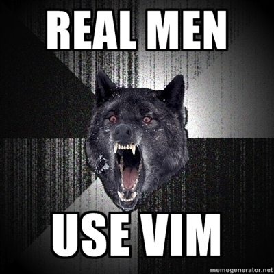
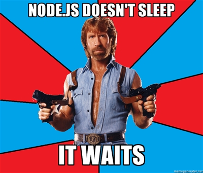

Event Driven Horizons
An intro to Node.js
@robinduckett
me@robinduckett.com
robinduckett
What is Node.js?
Node is a command line thing

Haxdbook:~ rduckett$ node index.js args
What is Node.js?
- Built on Google Chrome's V8 Javascript VM
- Set of libraries geared towards I/O and Networking
- Completely non-blocking
AWESOME
Features
- Built in REPL (Read, Eval, Print, Loop)
- CommonJS Module System (require, exports)
- Just Javascript - No DOM.
Things that are like Node.js
Javascript - Ringo (based on Rhino.js)
Python - Twisted
Ruby - Event Machine, Goliath
.NET - Async Framework
Baby Pandas
Pros and Cons
Pros
- Extremely versatile and fast
- Big support from big companies (Microsoft, Mozilla, Yahoo)
- Javascripters already know how to use it

Pros and Cons
Cons
- Fairly steep learning curve
- Not yet 1.0 (But is very mature)
- Isn't PHP
NPM and NVM
NVM (Node Version Manager)
Download / Compile / Manage Node.JS versions
NPM (Node Package Manager)
Download / Install third party modules from the command line
Built-in Node.js Modules
- HTTP Module
- Timers
- Process **
- Event
- Filesystem
- Socket
- Child Process
- Loads more
** Not really a module
Popular Third Party Node.js Modules
- Request
- ExpressJS
- Socket.IO
<Live Coding>

</Live Coding>
Node is event-based.

THE END